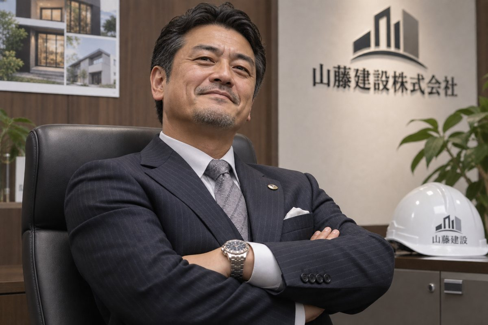
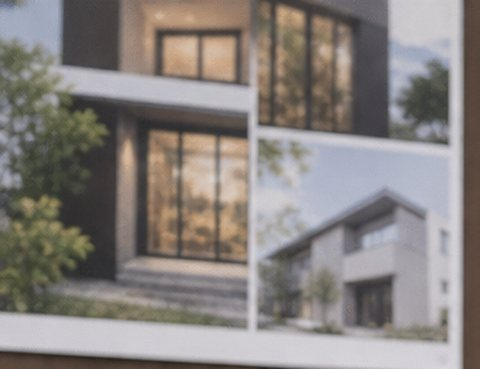
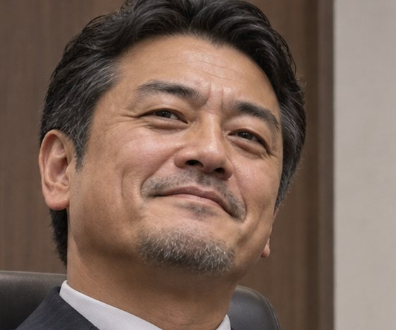
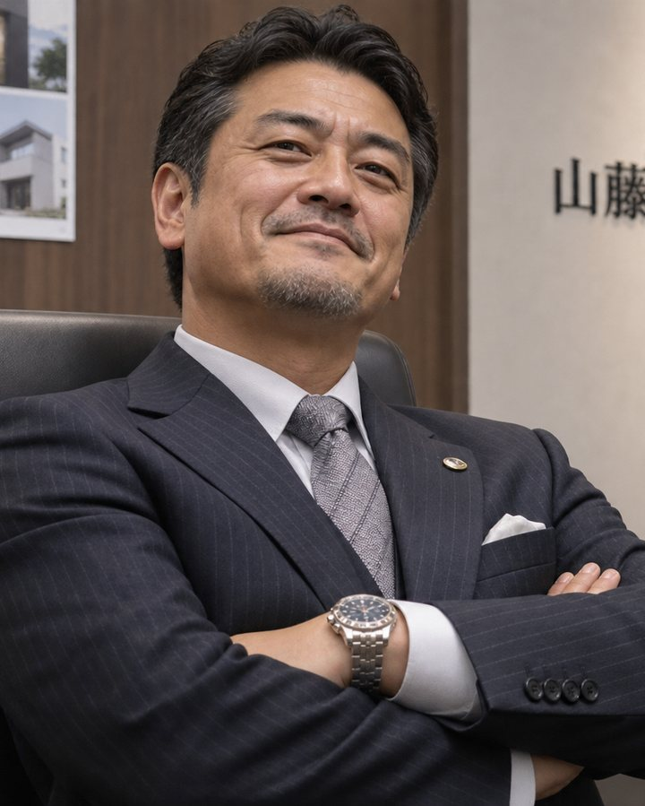
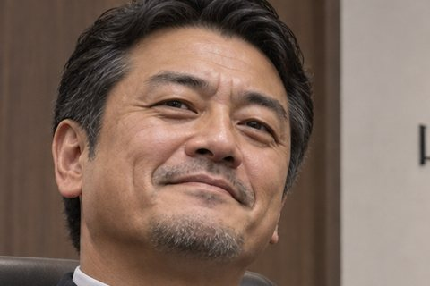

「創業の想い」「家づくりのこだわり」「施工事例」をチャットで一言伝えるだけ。ストーリーもキャラクターもコマ割りも、AIが自動で描き上げます。集客・採用・発信に使えるオリジナル漫画を、社長のチャットひとつで。
友だち追加してダウンロードLINE公式アカウントを友だち追加すると、ダウンロードリンクが届きます。

山藤建設株式会社・社長室 うちの家づくり、
施工事例は
漫画なら、その3つ、マンガクルならまとめて解決します。
テーマを一言伝えるだけで、どれも1冊の漫画になります。
あなたのPCとサブスクだけで完結する、4つの仕組み。
ストーリー構成もコマ割りも、対話しながらAIが自動設計。現場や打ち合わせで忙しい社長でも、台本やネームを書く必要はありません。
ChatGPT Plus・Claude Proの契約だけで完結。施工事例ごとに何本作っても、別料金がかさむことはありません。
専用のキャラクター設定シートを毎ページ参照して生成するから、1冊を通して「うちの社長」「うちの職人」だと分かります。
そのままホームページ掲載・見学会での配布・営業資料として印刷できる、1つのPDFファイルとして書き出されます。

これなら同じ社長キャラクターのまま、ページをまたいでも顔立ちが変わりません。
「創業30年の工務店の家づくりを漫画に」と一言伝えるだけ。

社長・職人・施主さんを、外見が被らないよう自動で設計。
コマ割り・セリフ・現場や住まいの背景まで自動で描写。
全ページを1冊のPDFに統合。HP・SNS・配布物にそのまま。
話しかけるだけで、家づくりの物語も社長キャラも漫画ページも。御社の最初の1冊を、今日のうちに。
建設・工務店・リフォーム・注文住宅の会社さまにご利用いただけます